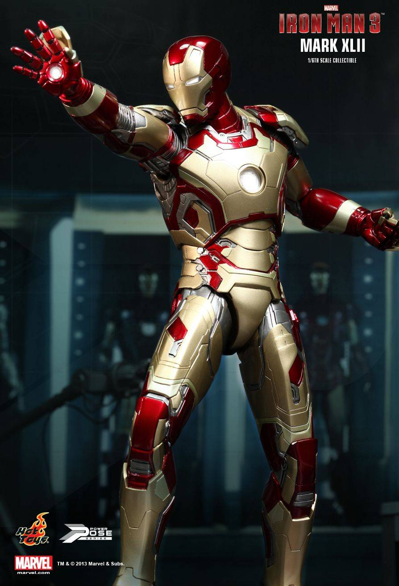
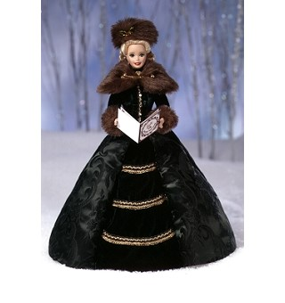
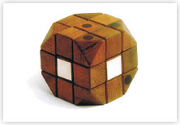
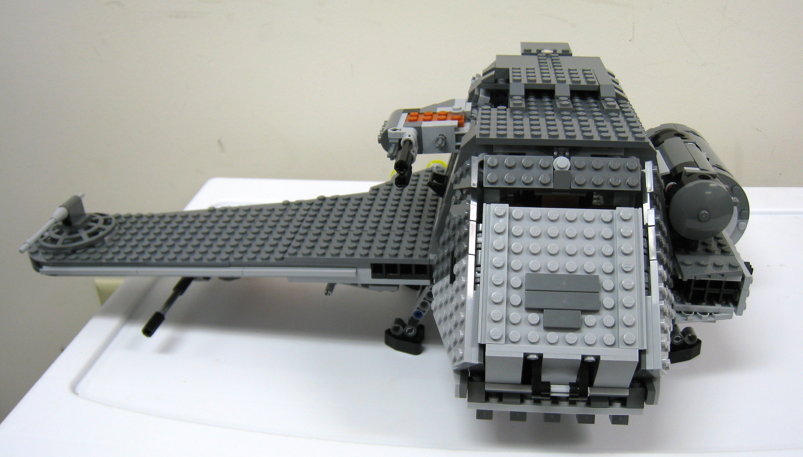

This year, Batcat museum is holding a toy exhibition that will exhibit
limited edition items that are loved by both children and adults. This
exhibition will be running for 1 week so do not miss it! Details about
artefacts that will be displayed can be found below.
Iron Man Mark XLII

A 30 cm limited edition figurine of Mark XLII from the Iron Man 3
movie by Marvel. The forty second suit invented by Tony Stark in the
film.
Holiday Caroler Barbie

Fashion doll manufactured by the American toy-company Mattel, Inc.
Second in the Holiday Porcelain Barbie Collection. Dressed in
charming traditional attire with elegant green fitted jacket.
Magic Cube Prototype

The prototype of the puzzle widely known, nowadays, as the
Rubik's cube. First invented by Erno Rubik in Denmark.
The Twilight

Popular construction toy which can be interlocked to create
different objects. The Twilight was released on July 26, 2008 as
part of the LEGO Star Wars.
Go to top